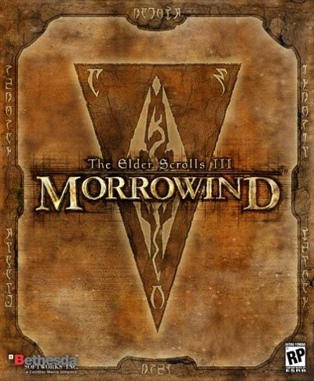

 The Elder Scrolls III: Morrowind is the third installment in the Elder Scrolls series. The game takes place on the island of Vvardenfell, a district in the Dunmeri province of Morrowind. It is smaller in scope than the previous games in the main series, Daggerfall and Arena, yet much more detailed. This epic, open-ended RPG allows for a wide variety of character designs and playstyles. The game continues to be sold two decades after its initial release, partially due to the widespread mod community which has the potential to supply Morrowind with new content in perpetuity. The Xbox 360 and Xbox One are backwards compatible with both the standard and GotY editions of Morrowind.
| Setting | Vvardenfell Morrowind |
| Time Period | 3E 427 |
| Developer | Bethesda Softworks |